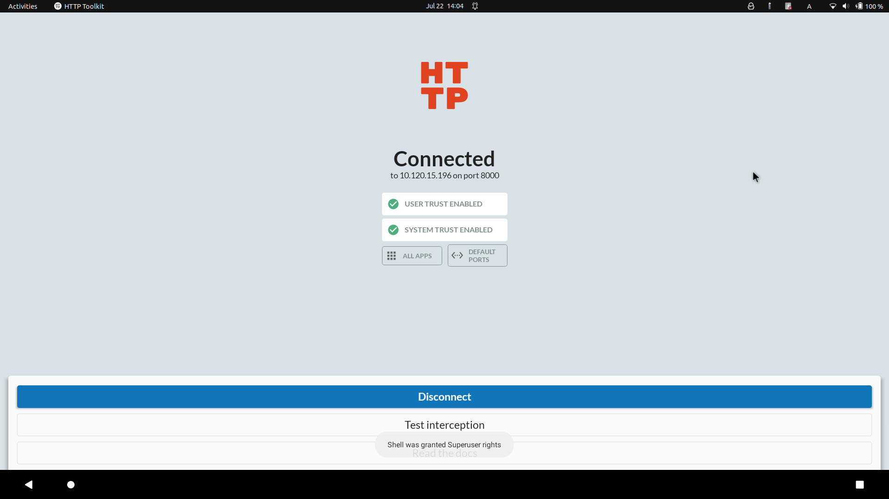

一次给 grab app 抓包的经历
在 Singapore 的那段时间，为了实现不用纸币，但我的全币种信用卡并不支持云闪付功能，我只能使用第三方平台对自己的银行卡进行绑定。
然后 grab 提供的大陆第三方平台只有 BOC，并且打开链接之后发现 BOC 的登录页面无法显示验证码。
我的任务就是尝试排查验证码无法显示的原因，最起码要把这个 URL 在电脑上复现出来。
grab desktop
根本找不到
android + httptoolkit(user)
burpsuite 似乎对安卓端没有什么特别的支持，fiddler 我现在才知道居然是商业软件，于是我选择了 httptoolkit
https://github.com/httptoolkit/httptoolkit-desktop
以及对应的安卓端：
https://github.com/httptoolkit/httptoolkit-android
httptoolkit在 Android 可以安装两种证书，一个 user 一个 system，显然后者是需要 root 权限的。
试了一下只用 user cert，可以抓到 chrome 的 http/https 的 packet，然而对于 grab 的内置浏览器无能为力。
在 Nova 的提示下，知道可能是 ssl-pinning 导致的，google 搜到这篇文章
https://www.secpulse.com/archives/134061.html
需要使用 Xposed 的 JustTrustMe 模块来解决，这下铁定要 root 了
刚买的新手机我是肯定不想 root 的，于是我选择
waydroid + magisk
Linux 系统肯定得和 WSA 与各大安卓模拟器说再见了，目前比较好的选择是 waydroid
waydroid 的官方 Android 11 镜像肯定是没有 magisk 的，虽然在 shell 中运行 su 可以切换到 root，但为了省事，还是使用一下仓库 build 包含 GApps 和 magisk 的镜像
https://github.com/pagkly/MagiskOnWaydroid
随后又下载了 RootExplorer，尝试挂载根目录和 /system 为 rw，确实可以。只不过主机上的 shell 似乎没有办法做到这一点。
但是作为用惯了 shell 的同学，寻思只能用 GUI 来进行诸多操作实属不便。既然 RootExplorer 能拿到这两个路径的读写权限，那为什么 shell 不能拿呢？
于是又 google 一番后，发现众多问题的回答（包括 xda）
https://forum.xda-developers.com/t/closed-universal-systemrw-superrw-feat-makerw-ro2rw-read-only-2-read-write-super-partition-converter.4247311/
https://androidforums.com/threads/the-one-and-only-official-system-rw-for-samsung-galaxy-s23-ultra-and-other-devices-by-lebigmac.1346815/
都指向了这个网站：
https://www.systemrw.com/download.php
虽然这个作者五颜六色、花里胡哨的字体，以及一些神奇的表情包让我觉得很恼火，但按照他的步骤，确实解决了我的燃眉之急
另外，这个回答也解决了主机和 Waydroid 的通信问题
https://www.reddit.com/r/waydroid/comments/13e619n/how_do_i_write_to_waydroid_files_from_arch_linux/
好了，目前所做的所有工作，就相当于在 Android 4 时代，随便下个一键 root 工具就能达到的效果。看来 Android 的安全门槛还是提高了不少啊
waydroid + magisk + Xposed
从网上找了个 Xposed installer，但是它 fetch resource 的网址 repo.xposed.info 在一年前已经寄了
https://forum.xda-developers.com/t/is-there-a-problem-in-xposed-website.4472673/
waydroid + magisk + EdXposed
因此又找了个 alternative，EdXposed
https://github.com/ElderDrivers/EdXposed
开始不知道 EdXposed framework 需要在 magisk 里面安，自闭了一会儿。然后从 magisk load zip的时候又遇到 unzip error，找到这个 forum
https://forum.xda-developers.com/t/magisk-module-unzip-error.4503395/
原因是下载的压缩包外面不能再套一层文件夹（想起尘封于记忆中的 nand2tetris 的提交方式）
终于把 EdXposed 的安装搞定了，此时是凌晨2点，离我开始已经过去4个小时了。

waydroid + magisk + EdXposed + ProxyDroid + burpsuite
由于 httptoolkit Android 端只提供了扫码方式，然后 Waydroid 并不支持摄像头，因此暂时不考虑
同时 Waydroid 不支持 wifi，也没有办法设置代理。即使在 shell 中设置
http_proxy 之类，也只对 shell 中的 curl
wget 有效，且不支持 https
于是我尝试使用 ProxyDroid 把所有 App 都通过 burpsuite 的代理地址，然而并没有效果
google 下可能的原因是某些 App 本身就不支持代理，即使在 root 层面上设定了全局代理也依然不会奏效
waydroid + magisk + EdXposed + PCAPdroid
在翻上述问题的回答时，有一个回答猜想我们可能是想找 Android 平台的抓包工具（你是真能猜啊），推荐了 PCAPDroid
但是这个 PCAPDroid 对 https 抓包是实验性功能，似乎并不稳定。按照它的 guide 安了 PCAPDroid mitm 和安装相关 cert 之后，还是抓不了 https 包
于是我想起来之前提到的 Xposed 插件 JustTrustMe，安了之后并没有任何改变
在 google 上搜了一下 alternative，找到了 TrustMeAlready
https://github.com/ViRb3/TrustMeAlready
这回测试浏览器访问 google，抓到了部分的 https 包
但是有个坏消息，grab app 打不开了，虽然说可能的解决方法是 MagiskHide，但是我感觉这条路快走到头了，于是我决定换条路
android + apk-mitm + httptoolkit(user)
为什么不直接对 apk 进行插桩呢，于是有了这个解决方案
https://github.com/shroudedcode/apk-mitm
因为 Waydroid 这边已经用不了 grab 了，于是我直接在自己的手机上装了 patch 过后的 grab，我本来会认为 self-signed app 在安装过程中会遇到一些阻碍，没想到居然还装上了
接下来重新使用 httptoolkit，确实能抓到的https包比之前多多了，但这里遇到一点小问题：
- 从 grab 的网站跳转到 BOC时，如果检测到抓包（mitm）会跳转失败
- 但如果进入了 BOC 的网站，就可以自由地抓包，但页面不能刷新，也就没办法获取 URL
这个问题最后是这么解决的
android + apk-mitm + httptoolkit(user) + a bit of luck
先断开 httptoolkit 的 intercept，然后打开进入 BOC 的链接，等待 0.5 ~ 1s 的时间再打开 intercept
运气好的话就可以进到 BOC 的页面，这个时候就可以从某个获取跳转链接的 GET 请求的 response 中拿到 BOC 的登录页面，只能使用手机的 UA 打开：

这个时候已经凌晨4点了，下班
后记
- 上次接触 Xposed 还是在两年前，那篇文章已经进了历史的垃圾堆了。本来是想把挖坟的，但毕竟不是实体机，等到哪天需要搞软路由再说吧
- 通过向 httptoolkit 的作者提 issue 后得知 waydroid 其实也是可以使用 ADB 的，于是我成功看到了梦寐已求的两个绿勾勾

- 即使装了 magiskhide，似乎 grab 还是有问题
1 | :/ # magisk --denylist ls |